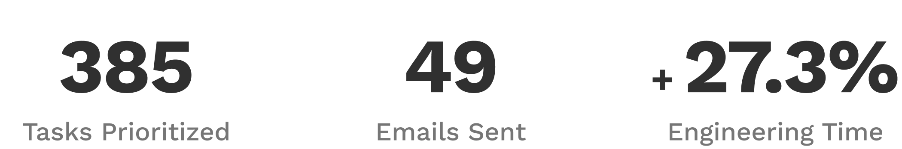
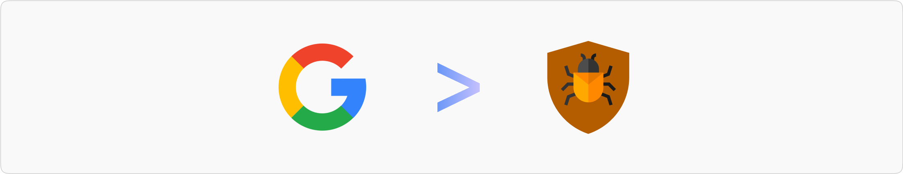
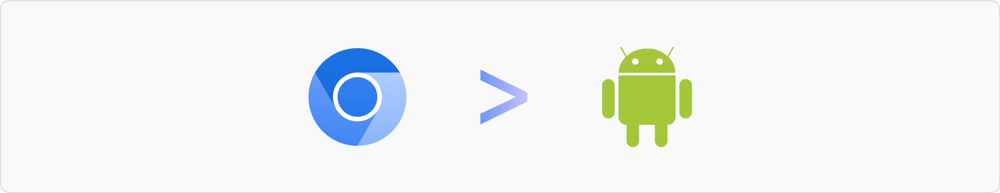
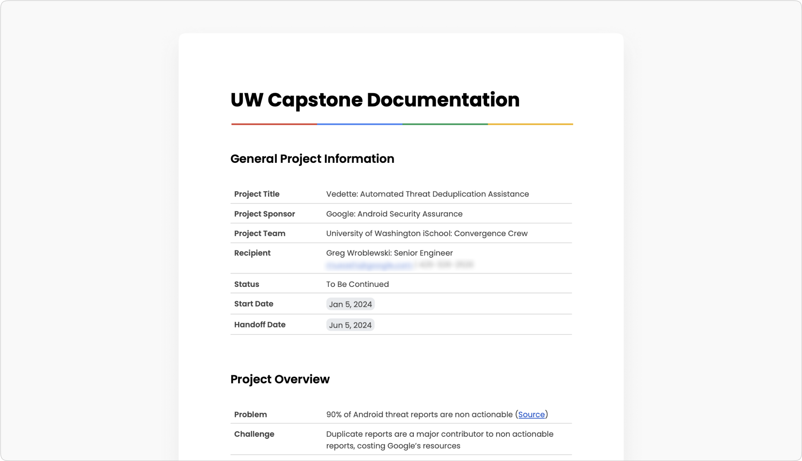

Chapters
Product Designer
Project Manager
2 Designers
3 Engineers
Jan 2024 – Jun 2024
(6 Months)
As the culmination of my time at the University of Washington Information School, I collaborated with Google through a six-month contract. Google provided me and my team with technical resources, problem space information, and time with stakeholders (Google employees). My team and I drove the software development process and timeline.
The VRP is an existing platform where people can report bugs (bug reporters) for a monetary reward. Android Security Analysts assess the reports for validity and severity. However, 90% of submitted reports are false positives, and many of those are duplicates. Through the project, Android Security hoped to reduce duplicates by 30% (seen as a realistic benchmark).

Statistics from Android's Vulnerability Reward Program (VRP).
The project will be a trailblazer for Android Security. Thus, a working proof of concept has to be delivered. Ideally, the solution should meet the set duplication reduction benchmark of 30%. Throughout the project, the team must adapt to unexpected changes while keeping the solution on track to completion and provide Google with milestone updates & presentations.

My team's solution must slash the rate of duplicate bug report submissions by 30%.
The form ensures that submissions are well-structured and contain the necessary information. Bug reporters must invest considerable time in submitting high-quality reports to receive rewards. Unfortunately, the form does not notify reporters that their report is a duplicate submission during filing; only Android Security Analysts discover the report is a duplicate later. This results in wasted time for everyone involved.
The current bug reporting form has five pages, with most of the reporter information provided in "the Problem" section.
From ideation and wireframing to validation and engineering, I built a solution with my team that harnesses ChatGPT 3.5 Turbo to calculate bug report similarity data based on the user's input and other Bug Reporters' submitted reports. The AI-driven feature is incorporated into the original VRP userflow and thus follows the VRP's design style.

My team's approach to solving the problem is integrating AI into the original user flow.
The AI cross-references the reporter's current form input and outputs a total report similarity score in real-time. If that score crosses a threshold, a toast popup will appear on the sidebar to inform the reporter. Additionally, more granular scores are displayed on the sidebar based on the portions of the form that have input areas (due to more content for analysis).

A sidebar modification that allows Bug Reporters to get real-time updates on their report's similarity.
Bug Reporters can learn more about the similarity scoring system by accessing the similarity score documentation in the sidebar's help button. The PDF document guides Reporters through the four similarity thresholds, highlights the most impactful parts of the form on the score, and outlines the steps to follow if their report is a likely duplicate.

A similarity scoring system guide enhances Bug Reporters' understanding.
By clicking on the "View Reports" link in the sidebar, a popup appears containing a table with reports similar to the one they are currently filing. Each row has metadata and similarity scores of two granularity levels based on the user's current input and the other report's contents as a whole or by the sections of the form with input areas.

A modal displays the similarity of the Bug Reporters' inputs to reports submitted by others.
Upon clicking a table row, the Bug Reporter can see which parts of their input are similar to another report. These similarities are highlighted based on three cybersecurity attributes that drive the solution's similarity scoring system. Additionally, the Reporter can view and download the other report for independent analysis.
A comparison screen displays the similarities between the user's input and a report submitted by another Bug Reporter.
When my team and I tested the solution, we were surprised it exceeded all three benchmarks. Google initially expected a 30% reduction in duplicate bug reports, but our solution outperformed, achieving a 40% reduction. Additionally, it was faster than manual review and aligned with human reviewers more accurately than anticipated.

I created the prototype and script for the solution demonstration, allowing my teammate to focus on video creation. The video and solution impressed many Google engineers after I had shared the demo with them. Next, my team and I won the innovation award (1/175 teams), finished as a finalist for the research award (2/175 teams), and received a featured article from the University of Washington.
Shoutout to Sami Foell (my teammate) for using his brilliant video editing skills to create this masterpiece.
In addition to participating in team research and solution ideation, I led a synthesis session when the usual facilitator was absent. I also spearheaded wireframing sessions, implementing a mid-fidelity wireframe stage to eliminate the need for UI perfection that came with high-fidelity wireframes (which causes slowdowns during early-stage designing) and providing a deliverable that Google sponsors (non-designers) could better interpret.
The project used three levels of wireframe fidelity to facilitate design thinking and communicate ideas to stakeholders.
I managed the project, overseeing a 6-month backlog and handling stakeholder communications. To address engineering challenges, I switched from 2-week to 3-week sprints, improving team organization and reducing mental strain. By manipulating the assigned tasks, I allowed the team's engineers to focus on developing the solution and uncovered 3 extra weeks for building.
While developing the front end with React.js, I realized we couldn't deploy the solution online due to the risk of exposing the ChatGPT API key. To showcase the solution without risking AI usage misuse (which costs the sponsor's money), I created a clone, removed the back end, and made the front end a static demo, allowing external interaction without compromising security or our chances for the capstone awards.
The solution's landing page has prominent links to the static demo. Check out the website here.
With the deadline approaching, my team and I faced challenges controlling ChatGPT's output formats. After days of inconsistent results, I realized the prompts were too complex. By letting the code handle some tasks, the AI could focus on calculating bug report similarity scores to reduce duplicates. After discussing the idea with my engineering lead, my team and I implemented the strategy, getting much more improved results.
Thus, to build a base-level understanding of the problem space in preparation for the official meeting with Google, the team researched cybersecurity, humans, and AI, analyzing peer-reviewed papers and expert articles. I focused on 6 items regarding the usage of AI in existing cybersecurity systems and known challenges.
After reviewing the team's findings, we gained two insights. First, AI's effectiveness is limited by the quality of its training data, highlighting the need to clean Google's data to avoid garbage in and out. The second insight was to enhance human-AI collaboration by ensuring transparency and explainability. Many AI systems are black boxes, so our solution must be clear and understandable to foster trust and cooperation.
I focused on products that helped businesses detect security vulnerabilities through AI and automation, noting the solutions' price points, strengths, and weaknesses. After team collaboration, I realized the 25 tools analyzed all emphasized organizing data and integrating other existing software. However, these also introduced steep learning curves and overwhelmed users with information and complexity without transparency.
Through 4 discussions with Android Security team members, my team and I learned their vulnerability triaging systems, goals, and pain points. Prior research on human-AI collaboration enabled my team and me to engage with Google's challenges. Afterward, I worked with my team to uncover themes like using automation to streamline manual processes and the importance of improving bug report quality.
The team and I organized the Android team discussion notes into themes.
To avoid groupthink, my team and I brainstormed solutions separately. I focused on add-on features that could improve the quality of submitted reports, leveraging Google's report structuring criteria and envisioning user input boolean checks. I planned to use AI to enforce report structure, thus improving overall report quality.
The team's solution ideas are color-coded according to the specific problem each idea addresses.
With my team, I divided the solutions into two categories: form and portal features. The form category encompasses add-on features to the existing bug reporting form. The category has subcategories because the team had matching, unique, and combinable ideas. On the other hand, the portal category contains features that are possible only on a separate platform. Ideas that addressed the problem effectively were marked.
I considered technical feasibility and stakeholder impact to narrow the list of synthesized ideas. The chart served as a guideline for the team rather than a strict rule. The team and I made exceptions for minor features that complemented other ideas, such as bug-hunting collaboration (top left) and noting bug reporters' experience levels (bottom left).
Synthesized ideas mapped based on technical feasibility and stakeholder impact.
With the clock ticking, my team and I had to make difficult choices during a meeting with Google, where we presented our top features. I decided to have the team focus on building the automated duplicate report-checking feature, which solves Android Security's most imminent problem: duplicate bug report submissions. My team and I preserved the other features for future consideration.
Further prioritization of the top features resulted in "must haves," "should haves," and "nice to haves."
My teammate and I used simple shapes and rectangles to keep our concepts intentionally vague, encouraging creative thinking. We worked on low-fidelity wireframes separately, adding annotations to clarify our ideas before sharing them. Through discussions, we built consensus and agreement, enabling us to move on to the next level of wireframe fidelity.
A collection of the team's low-fidelity wireframes.
A consensus was formed between me and my design teammate, following the low-fidelity wireframes, leading to concrete design specifications. We both felt it was time to collaborate on a design reflecting the actual UI. However, we were not ready to go into the highest fidelity of design yet because elements less essential to this stage (like color, spacing, and sizing) were being obsessed over.
Mid-fidelity wireframes fulfilled the design requirements discussed previously.
My team and I presented the design to Google engineers and cybersecurity professionals, receiving valuable feedback on user experience and technical feasibility. Our sponsors were particularly interested in understanding the AI model's criteria for determining report similarity. After reviewing Android's security rules for bug report triaging, my team and I selected three based on feasibility and integrated them into the comparison screen.
The comparison field component now has highlight colors corresponding to their associated attributes.
Given the project's scope and limited timeframe, my team and I couldn't directly contact Bug Reporters. However, we connected with key professionals, including an engineer who worked on AWS's bug reporting experience. After refining the mid-fidelity wireframes, we developed a prototype. Feedback highlighted the importance of allowing Bug Reporters to export similar reports in their preferred format for independent analysis.
An export button that offers Bug Reporters three different file options.
I worked with my team to assess the effectiveness of our solution by selecting a sample of 10 duplicate bug reports for testing. To evaluate the accuracy, I put the sample into our solution to see the amount identified as duplicates by the AI. 4/10 (40%) were marked duplicates based on a 75% or higher similarity score, surpassing expectations. I also recorded the AI's deduplication time to measure its speed compared to human reviewers.
To measure the AI's agreement with human reviewers (Inter-Rater Reliability), we used Cohen's Kappa. Since the triaged reports didn't specify the determiners used by our solution, we provided 10 reports to new Google reviewers, who completed a multiple choice questionnaire on the 3 security determiners we previously selected. Then, we compared their responses to our solution's answers, and calculations followed.
I created a report presenting the process of calculating agreement between human reviewers and the AI model.
Throughout the adventure, my team and I worked with Google employees (specifically engineers and managers from the Android Security Team) and experts in the cybersecurity and AI industries. Contact with Bug Reporters was considered out of scope because of timelines and coordination challenges.
The project focused on Google's processes and the advice of other cybersecurity experts.
Android bug reports are not released publically. As such, my team and I used Chromium bug reports because they were open-source and related to the security of Google products. Chromium reports don't follow the same formatting structures as Android reports. Nevertheless, the solution works off Android's reporting portal and uses Chromium report data for AI training with steps in the handoff documentation for switching to Android's reports.
The project used open-sourced Chromium data to ensure project feasibility.
By starting the documentation early, my team and I thoroughly examined the project and effectively summarized our process and insights in an easy-to-understand format. Writing the document gave me a retrospective of the journey and milestones, allowing me to reflect on what I did, what to take away from the project, and how to move forward into other future projects.
Throughout the project, I learned to leverage my teammates' strengths and weaknesses to effectively cover for each other in a fast-paced and high-pressure environment. Team bonding activities and authenticity lifted our spirits even in the most challenging times. We solved complex problems while having the time of our lives.


I had the pleasure of working with Eddy on a project sponsored by Google's Android Security team. As Project Manager and UI/UX Designer, Eddy demonstrated exceptional leadership and creativity. He kept the team on track by setting achievable milestones and clear deadlines, and ensuring effective communication within the team. His work on UI/UX Design was equally impressive, and he is undoubtedly one of the best designers I've had the privilege of working with. His ability to balance big-picture planning with attention to detail was truly impressive. Eddy's dedication and expertise made a lasting impact, and I have no doubt he'll bring the same energy and talent to any future endeavors.
Hitanshu Prajapati
Software Engineer (Contract)
I had the pleasure of working with Eddy on a contracted project with Google's Android Security team. Eddy played a pivotal role as the Product Designer and Project Manager - creating timelines, leading standups, and establishing communication norms. He showed immense amount of thought when designing, implementing, and collaborating on the project, emphasizing ideation and iteration throughout all stages of development. I would love to have the chance to work with Eddy again in the future, I know that he will be an asset to wherever he ends up.
Kyle Raychel
Data Engineer (Contract)
Working with Eddy on the Google-sponsored contract was delightful. As our project manager and product designer, Eddy has proven to be an organized and reliable leader willing to get his hands dirty wherever possible. As an outspoken opportunist, Eddy will always gather information about his surroundings and plan for the betterment of the current task, or if needed guide the production with a critical lens towards the bigger picture.
There was a key moment in the work that was pivotal to us winning the innovation award, and it was thanks to Eddy who could help steer us in this direction. When we were speaking with our sponsor about the project details, it had been decided that the product would be backend-oriented, thus there was no need to focus on the presentation or frontend development of the product. This, however, meant that the project would not be presentable in any easily understood fashion. Eddy, the outspoken opportunist he is, suggested a presentable version of this in-progress product. For 1 month, part of the team alongside Eddy focused on this development, and by the end of this deadline had created a public-friendly website and demo of the product at hand, carefully crafted to be easily digested by the public while also in line with the Google's theme and standards.
With this presentable version of the product, the project attracted more interest in the form of interviews and Q&A sessions. The public was able to understand the project, many questions were asked and new opportunities were made in the AI cybersecurity space because the product was presentable and indicated its meaning clearly. This could not have been done without a strong understanding of design, and the management skills needed to take any work in the direction it needs. Wherever Eddy goes and whatever he does in the future, in the end he will find ways toward success.
Harold Pham
Back-end Engineer (Contract)
See what other people are saying about me here.
Next Project